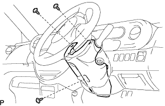
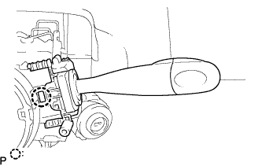

Headlamp Damed Switch ASSY removal |
| 1. Remove the steering column cover |
|  |
Turn the steering wheel 90 ° left and right to remove two screws.
Remove the lower screw and remove the steering column cover.
| 2. Remove headlamp demand switch ASSY |
Cut the connector.
|  |
Press the claws in the figure, remove the bite, and remove the head lamp damed switch ASSY.